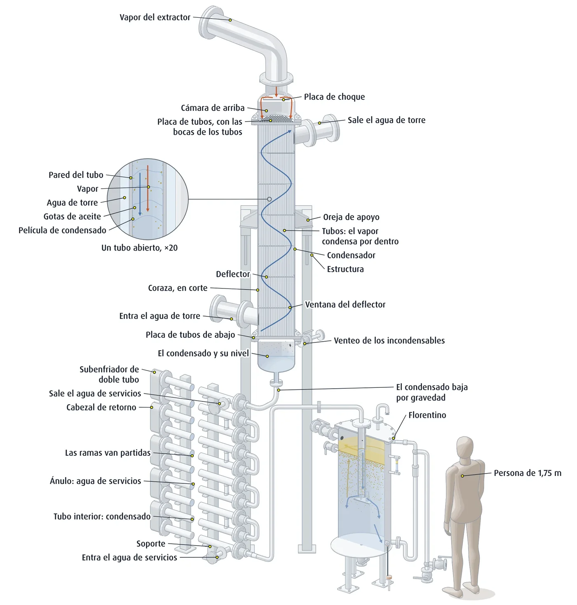

El intercambiador por dentro
El balance y lo que pide el proceso
antes de cualquier áreaEl calor que entrega el caliente lo recibe el frío, Q = ṁccp,cΔTc = ṁfcp,fΔTf, siempre: el balance cierra. El equipo decide cuánto calor pasa, y de ahí salen las dos salidas. Lo que sí puede ser imposible es lo que pide el proceso: si para llevar el caliente a su objetivo el frío tendría que volver por encima de su límite, ningún intercambiador lo logra con esos caudales.
LMTD y factor de corrección F
Q = U·A·ΔTml·FLa ΔTml se calcula siempre como si el equipo fuera de contracorriente pura; F corrige por el arreglo real de pasos. La regla del capítulo 22: F de 0,80 o más, nunca por debajo de 0,75. Más abajo, la curva es tan empinada que un pequeño error en las temperaturas cambia mucho el área.
Efectividad y NTU
lo que hace el equipo instaladoCon el área conocida, ε-NTU da las temperaturas de salida sin suponerlas: ε = Q/Qmáx, Qmáx = Cmín(Tc,ent − Tf,ent) y NTU = UA/Cmín. Es el cálculo del que salen las salidas en todo el explorador. Con el área que pide el objetivo devuelve exactamente la salida objetivo: LMTD y ε-NTU son el mismo modelo.
Coeficientes y caídas de presión
1/U es una suma de resistencias en serie: la película de la coraza, el ensuciamiento de afuera, la pared, el ensuciamiento de adentro y la película de los tubos (estas dos referidas al área externa con dₒ/dᵢ). La más grande manda: subir la velocidad del lado que más resiste es lo que más mejora U, a costa de la caída de presión (ΔP ∝ v²).
Ensuciamiento entre limpiezas
capítulo 22El equipo arranca limpio y se ensucia: la resistencia crece hasta acercarse a un valor asintótico (modelo de Kern y Seaton). El Rd de diseño es la reserva para el final de la campaña: mientras el área instalada alcance, el equipo cumple; cuando no, toca limpiar.
Materiales y costo
estimación clase 5 · ±40 %El área instalada se paga una vez; el bombeo, todos los años. Subir velocidades mejora U y reduce el área, pero la caída de presión crece con v² y la bomba la cobra en cada hora de operación. Las correlaciones de costo no están en el libro: sirven para comparar alternativas, no para cotizar.
Ecuaciones
con los valores del caso actualLas del capítulo 22 del libro, evaluadas con la configuración de los controles. Cada correlación dice de dónde sale, y las que el libro no trae se marcan.
El tren de condensación por dentro

El tren de la planta de aceite esencial, como lo dibuja el capítulo 23: E-201 de pie, con la coraza cortada para mostrar los tubos y los deflectores; E-202 en horquillas, con sus ramas de 6 m partidas, y el florentino.
El camino del vapor
curva de condensaciónLas dos zonas de E-201
una ΔTml por zonaEl subenfriador E-202
doble tubo en contracorrienteCoeficientes y caídas de presión
E-201El venteo y el espacio de cabeza
ley de DaltonEcuaciones
con los valores del caso actualLas del capítulo 23 del libro, evaluadas con el equipo de los controles.